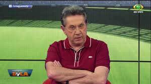
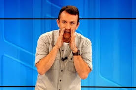
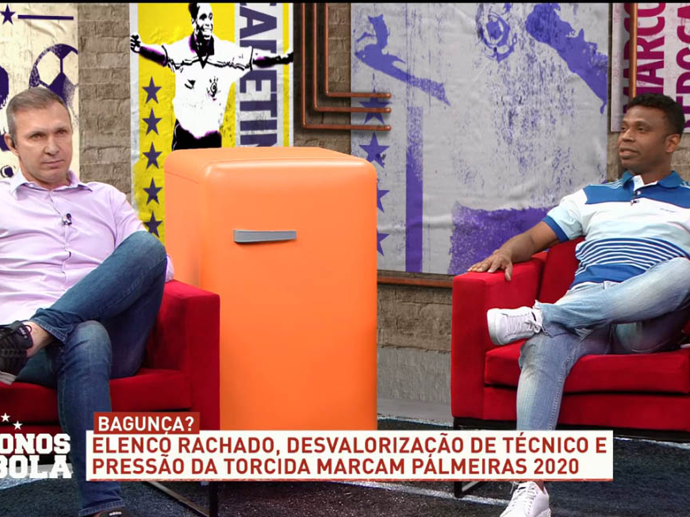
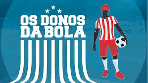

QUIZ OS DONOS DA BOLA
1- Qual a frase mais falada pelo Edilsu?
2- Qual a frase mais falada pelo Edilsu?
3- Qual o apelido dado a este senhor, pelo Craque Neto?
4- Qual era a posição do Velloso, quando ainda era jogador de futebol?
5- Qual o verdadeiro nome do grande Maravilha?

6- Há quanto tempo o craque Neto apresenta os Donos da Bola?

7- Selecione a alternativa que cita um bordão dito pelo Maravilha:
8- O que aconteceu nesse dia?

9- Qual o apelido do Edilsu, quando era jogador?
10- Em que emissora é transmitido o programa?

11- O que o craque Neto grita nesse exato momento?
12- Cite um bordão do Craque Neto: